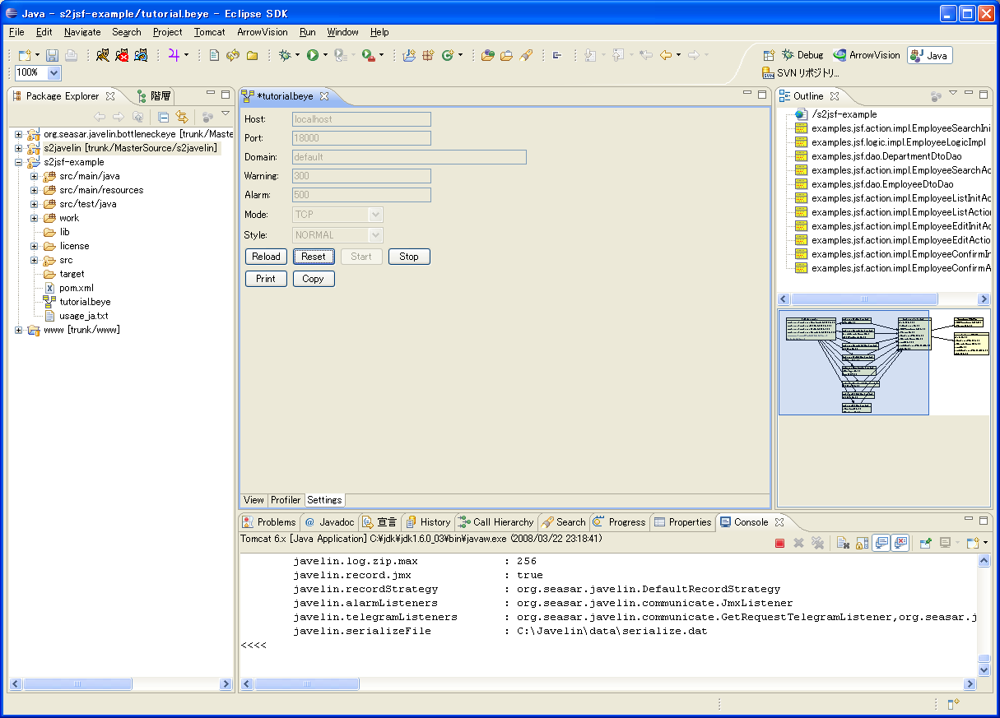
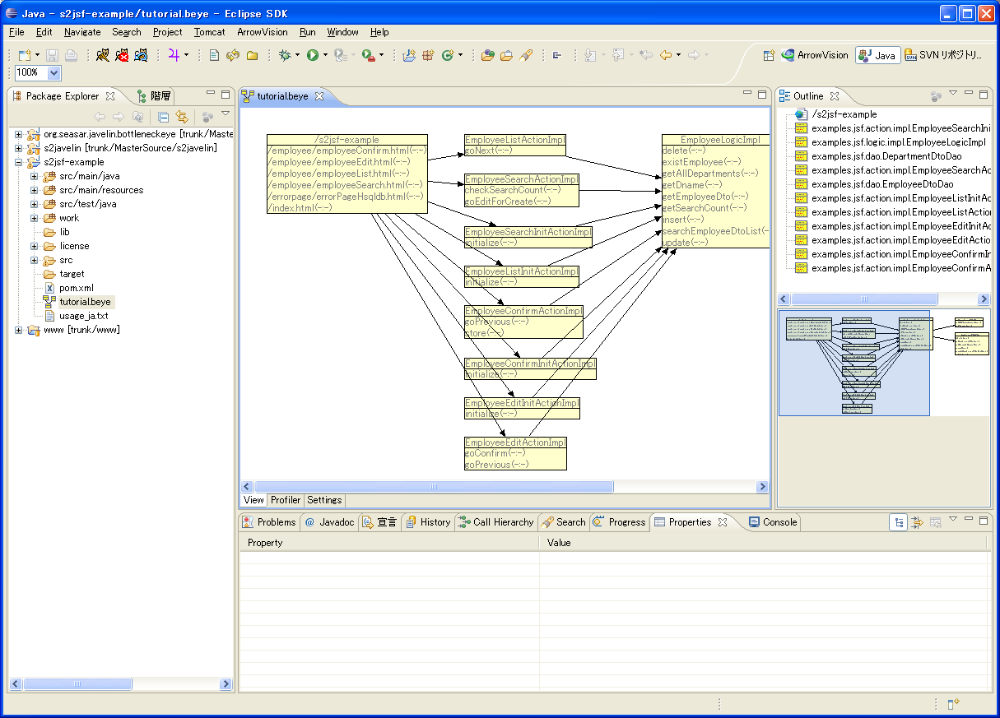
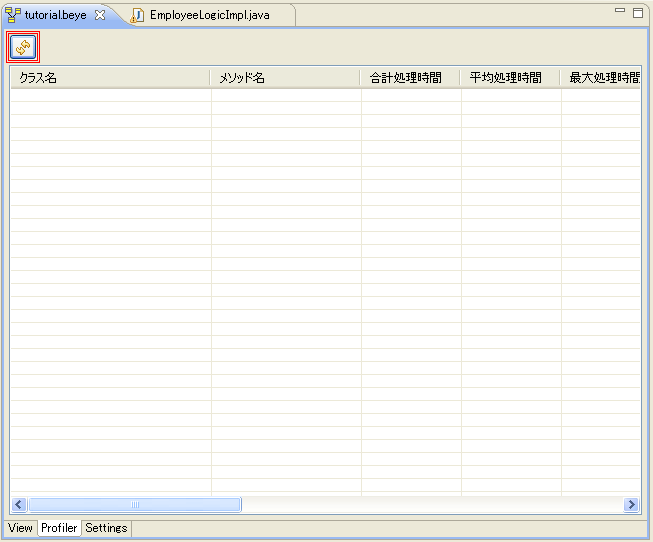
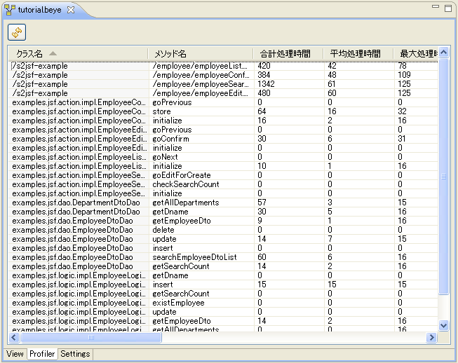

このページでは、S2Javelinの便利な使い方を解説しています。
負荷性能を測る
１．はじめに-前提条件
このページでは、BottleneckEyeのプロファイラビューを使って、システムの負荷性能を測定する手順を示します。
S2Javelinに付属のreadme.txtに従って、 S2JavelinおよびBottleneckEyeのインストールを完了して下さい。
負荷生成用のツールの準備も必要ですが、本項ではその手順については割愛します。
２．セットアップ
- まず、S2Javelinのパラメータを変更します。
javelin.properties中の「javelin.recordThreshold」
「javelin.alarmThreshold」の値を「10000」ミリ秒に変更します。
(ここでは10000ミリ秒としましたが、ファイル出力やアラーム通知が発生しないように、
十分に大きな値を設定して下さい。)
# ファイル出力を行うターン・アラウンド・タイムの閾値(単位:ミリ秒)
javelin.recordThreshold=0
# BottleneckEyeへの通知を行うターン・アラウンド・タイムの閾値(単位:ミリ秒)
javelin.alarmThreshold=0
↓
# ファイル出力を行うターン・アラウンド・タイムの閾値(単位:ミリ秒)
javelin.recordThreshold=10000
# BottleneckEyeへの通知を行うターン・アラウンド・タイムの閾値(単位:ミリ秒)
javelin.alarmThreshold=10000
こうする事により、動作ログが出力されなくなるため、
負荷測定に不要なオーバヘッドの生成を避ける事ができます。
- アプリケーション・サーバを起動し、アプリケーションを動作させます。
(起動直後は初期化処理などで通常よりも処理時間が必要となるため、
正しい測定結果を得るには、ウォーミングアップが必要です。)
- 続いて、Eclipseを起動し、「クラス図を作成する」
で作成したbeyeファイルを開きます。
- BottleneckEyeがアプリケーションに接続している
(クラス図の背景が白色である)事を確認します。
- 負荷をかける前に、測定データのリセットを行います。
SettingsタブのResetボタンを押して下さい。
クラス図のメソッド表記が灰色になれば、成功です。

→ 
３．測定
- 負荷ツールを使用して、アプリケーションに負荷をかけます。
- 負荷生成後、ファイルを出力していないか確認します。
ファイルが出力されるのは以下のディレクトリです。
# jvnファイルを出力するディレクトリへのパス。
javelin.javelinFileDir=../logs
javelin.propertiesファイルからの相対パス指定になります。
４．データの確認
- SettingsタブのReloadボタンを押します。
- さらに、Profilerタブを開き、リフレッシュボタンを押すと、測定結果が一覧形式で表示されます。

→ 
|


{kind=link}
{kind=link}
{kind=link}
{kind=link}
{kind=link}